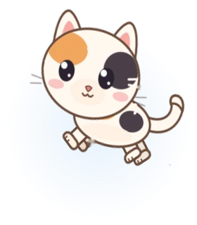
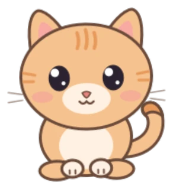
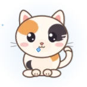
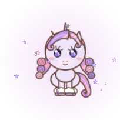
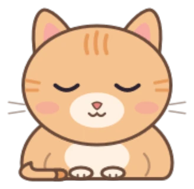

Click, drag, fling
Click a critter to pop it. Pick one up and put it somewhere else, or fling it and watch it slide across the screen.

Critters wander your screen, nap when you step away and pop when clicked. Rarer visitors come the longer you stay.
Click a critter to pop it. Pick one up and put it somewhere else, or fling it and watch it slide across the screen.

They curl up when you leave your desk and wake when you come back.
Time at your desk earns berries. Spend them in the Shop on clothes, dyes, treats and beds for napping critters.
Critters hide while a full-screen game, film or presentation has the screen. Ctrl+Shift+P pauses them, or they can live on your desktop behind your windows.
Turn any picture into a homemade critter that walks your desktop with the rest.
Every critter that arrives rolls for rarity. These are the game's default odds before luck. Luck grows while you stay at your desk, up to three times the odds after two hours, and Rare Hour doubles them for one hour a day, at a time you pick.

Common Most Eight everyday species
Rare 1 in 25 A new look, like the calico kitten Epic
1 in 143
Rarer still, like the snow kitten
Epic
1 in 143
Rarer still, like the snow kitten

Legendary 1 in 1,000 Special visitors, secret until you meet themYour first visitor each day is always Rare or better, and your Collection keeps everyone you've met.

Once you've got to know your critters, you can leave a tip on itch.io if you'd like to.